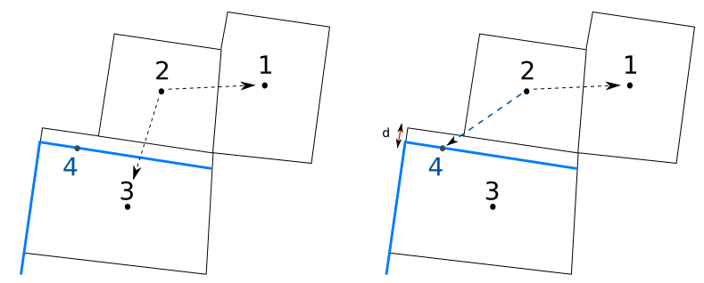
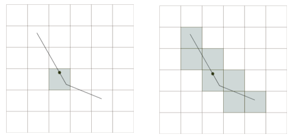
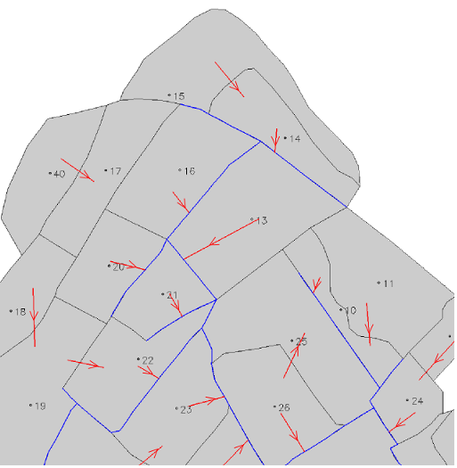
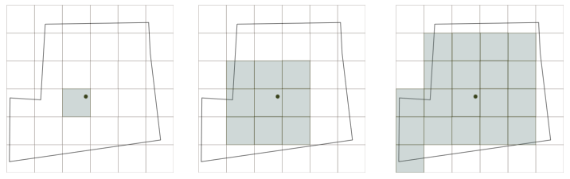
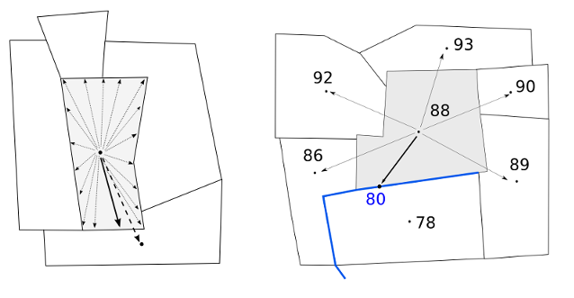
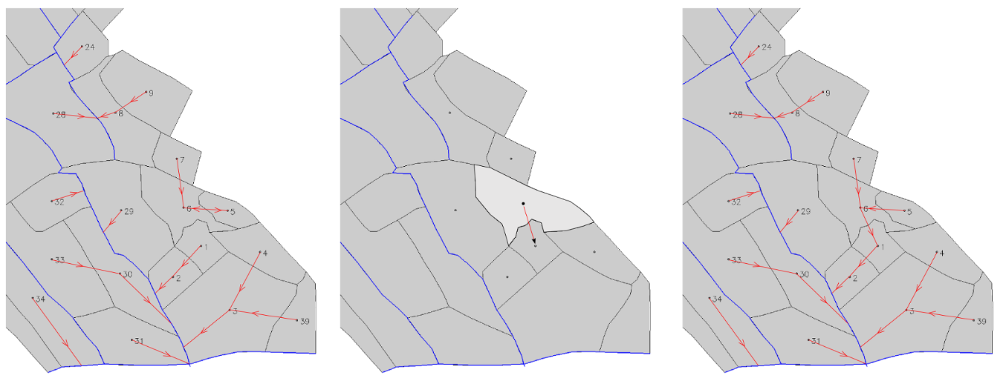

|  |
| Potential topological neighbours without distreach (left) ; Potential topological neighbours with distreach (right) |
|  |
| Flag c set: pixel in contact with reach centroid is only used (left) ; Flag c not set: pixels in contact whith whole reach are used (right) |
|  |
| INPUTMAN layer (in red arrows), SU layer (in grey color) and RS layer (in blue lines) |
|  |
| Flag A set (left) ; Flag N set (middle) ; Flags A and N NOT set, default method (right) |
|  |
| Flag B set (left) ; Flags B NOT set, default method (right) |
|  |
| Topology before loop treatment (left) ; Step 2 of the loop treatment (middle); Step 4 of the loop treatment (right) |
GRASS 6.3.0 :~ > m.toposu -c -a -b -s -l input=surface_units output=surface_units2 dem=MNT hydro=reachs gu=groundW ID=SELF_ID IDHYDRO=IDH POHYDRO=POH IDGU=IDG step=2 distreach=1
GRASS 6.3.0 :~ > m.toposu -c -a -b -s -l input=surface_units output=surface_units2 dem=MNT hydro=reachs inputman=lineIN ID=SELF_ID IDHYDRO=IDH POHYDRO=POH step=2 distreach=1
rabotin@supagro.inra.fr
Last Changed: 04 July 2011
Copyright 2003-2008 UMR LISAH OpenFluid